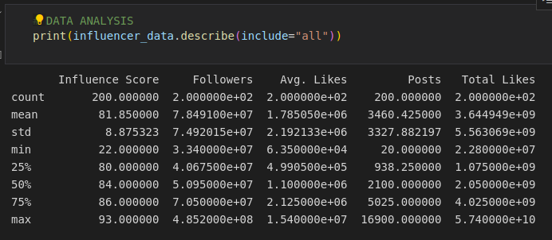

Project 1: Top Influencers
Question
What metrics affect the influencer score? How do they affect it? What is the relationship between the different metrics and influencer scores?
Why do we care?
We deal with celebrities constantly. From seeing them on social media to watching movies with them in it. Therefore, their influence score on social media is important because it exemplifies how many people they reach and the level of impact they have. It is important to know what metrics affect the influencer score to learn how it can be manipulated and reveal whether there are biases or flaws with the influencer score system.
Approach to answering the question
I used the dataset of Top Influencers Crushing On Instagram from Kaggle. It was last updated a month ago. The statistics that were chosen to focus on were the influence score, followers, average likes, number of posts, and the total number of likes. We had the influence score and the dependent variable and the other statistics as the independent variables.
Findings

Analysis
We find a similar pattern in all the graphs with a weak positive linear relationship with multiple outliers. We can conclude that the number of followers and the number of total likes affect the influence score the most. However, average likes and posts do not seem to affect the score as much as expected.
Validity
The only threat to validity would be the data from Kaggle itself and how and when it was sourced. The data seems to match the correct metrics but we have no idea how trustworthy the influence score is. We know it was updated about a month ago and that the influencers listed are real.